Đưa AI vào toàn công ty: Lộ trình, cơ cấu tổ chức và cách vượt nút thắt
Học từ hai slide deck của Link and Motivation (1.500 nhân viên không phải kỹ sư) và SmartHR (1.652 nhân viên, 6 tháng đầu của phòng AI Operations) — rồi soi lại cách Scuti AI đang làm và chọn ra những chiến lược sẽ thử.
Đọc nhanh (TL;DR): Cả hai công ty đều rút ra cùng một điều: “phát tool AI cho mọi người” không phải là triển khai AI.
Muốn AI tạo ra kết quả kinh doanh, phải coi nó là một cuộc thay đổi tổ chức — có đích đến rõ, có người sở hữu ở cấp lãnh đạo,
có người thúc đẩy ngồi ngay trong từng bộ phận, có thước đo nối từ “dùng AI” tới “doanh thu / lợi nhuận”, và có guardrail để mọi người
(kể cả người không phải kỹ sư) dám làm mà không gây sự cố.
Quy mô: ~1.500 nhân viên không phải kỹ sư + ~100 kỹ sư
Đăng: 25/09/2026, 45 slide, sự kiện “PEK2026” (theo URL; nội dung chốt bằng bài học Platform Engineering)
Trọng tâm: làm sao để non-engineer dùng AI ra kết quả và tự làm tool an toàn
Kết quả công bố (tháng 9/2026, mỗi số đo ở bộ phận khác nhau): ~1.500 người dùng AI hằng ngày, ~3.000 tool AI tự làm,
doanh thu/người ~140% so với năm trước (bộ phận consulting), số buổi gặp khách/người ~1,8 lần, công vận hành giảm ~50% (mảng outsource).
SmartHR
Diễn giả: Konishi Yoshiki – trưởng “AIオペレーション室” (AI Operations Office)
Quy mô: 1.652 người (4/2026), ~75% thuộc khối không phát triển
Đăng: 28/09/2026, 20 slide
Trọng tâm: 6 tháng đầu dựng bộ máy đẩy AI toàn công ty: vai trò, governance, đo lường
Điểm xuất phát: Gemini và Notion AI đã được dùng rộng, nhưng thiếu luật chung, mỗi bộ phận tự chọn tool,
dữ liệu chi phí/sử dụng nằm rải rác. Phòng AI Ops ra đời 4/2026 với 1 trưởng phòng kiêm nhiệm, chưa từng làm AI/DX chuyên trách.
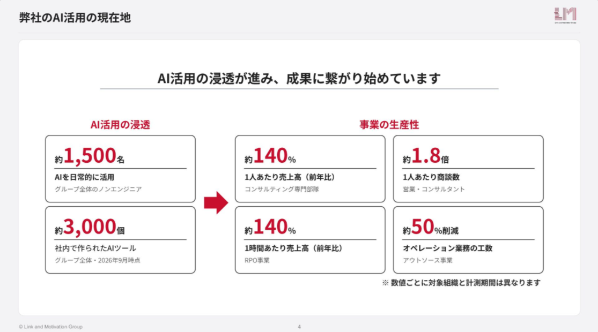
Ảnh 1 – LMI slide 4: hiện trạng tính đến 9/2026 (điểm xuất phát là khảo sát 1/2024)
Vì sao ghép hai deck này? Chúng bổ sung cho nhau rất khớp: LMI kể chuyện từ dưới lên (hiện trường, thói quen, tool tự làm, guardrail)
còn SmartHR kể chuyện từ trên xuống (sứ mệnh, mô hình vận hành, governance, đo lường). Ghép lại thành một bức tranh gần như đầy đủ.
2. Ý tưởng cốt lõi: AI adoption là thay đổi tổ chức, không phải roll-out tool
Nếu chỉ được nhớ một câu từ hai deck, tôi sẽ chọn: “số người dùng” không phải là kết quả. SmartHR viết thẳng điều này vào sứ mệnh
— không lấy số user hay lượng sử dụng làm đích cuối, mà hướng tới “trạng thái kết quả kinh doanh được tạo ra một cách bền vững”.
LMI thì học điều đó bằng thất bại: phát ChatGPT cho tất cả, mở lớp học, và đến 1/2024 khoảng 70% vẫn không dùng nổi một lần mỗi ngày.
SmartHR vẽ đích đến thành bậc thang ba nấc: kết quả cá nhân → kết quả tổ chức → kết quả kinh doanh, và thiết kế cả chương trình theo khung 5As của McKinsey.
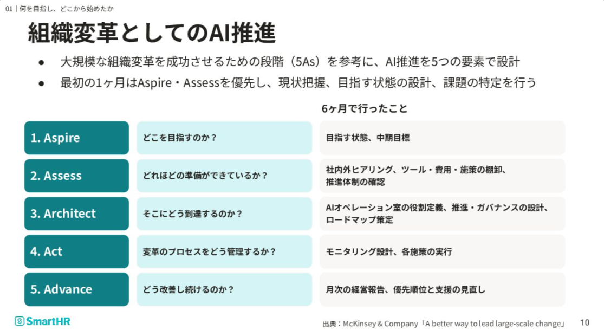
Ảnh 2 – SmartHR slide 10: thiết kế AI adoption theo khung 5As (McKinsey)
Hiểu theo cách của tôi, có ba “dịch chuyển tư duy” xuyên suốt cả hai deck:
Từ (cách nghĩ phổ biến)
Sang (cách hai công ty làm)
Rộng và nông: phát tool cho tất cả cùng lúc
Hẹp và sâu: một bộ phận làm “khách hàng đầu tiên”, chứng minh giá trị rồi mới mở rộng
Đo số user, số prompt
Đo cả chuỗi: chi phí → sử dụng → sáng kiến → kết quả tổ chức → kết quả kinh doanh
Đội AI là người gác cổng (gatekeeper), cấm/cho phép
Đội AI là người mở đường (enabler): dựng nền tảng, đường chuẩn, rào chắn để người khác chạy nhanh
3. Lộ trình 5 giai đoạn (tổng hợp)
Không deck nào trình bày một “roadmap” theo đúng nghĩa timeline. Tôi ghép các bước của hai công ty thành 5 giai đoạn, mỗi giai đoạn có một
điều kiện qua cổng — mượn đúng tinh thần “đạt điều kiện hoàn thành rồi mới sang bước sau” trong golden path của LMI.
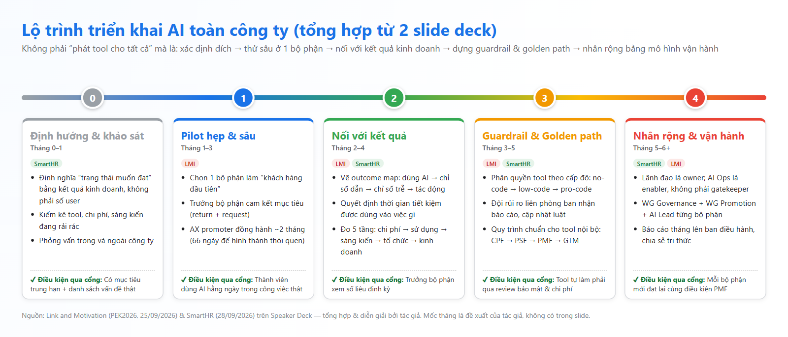
Hình A (tự vẽ) – Lộ trình 5 giai đoạn. Mốc tháng là đề xuất của tác giả, không có trong slide.
SmartHR dành gần như trọn tháng đầu chỉ để nhìn cho rõ: phỏng vấn trong/ngoài, kiểm kê tool – chi phí – sáng kiến, xem bộ máy hiện có.
Lý do: lúc phòng AI Ops ra đời, vấn đề không phải “thiếu AI” mà là mỗi nơi một kiểu — tool mới phải xin từng nơi nên chậm,
không ai đứng ra điều phối, dữ liệu nằm rải rác. Không thể ưu tiên đúng nếu chưa có bức tranh này.
Giai đoạn 1 – Pilot hẹp & sâu
Đây là bước ngoặt của LMI: ngừng “phát cho cả công ty”, chọn một bộ phận làm khách hàng đầu tiên — đúng như cách một đội platform
tìm “pilot team”. Hai nguyên nhân khiến người ta không dùng (khảo sát 1/2024) là không nghĩ ra việc để dùng (57%) và không biết ra lệnh (26%).
Cả hai đều không giải được bằng lớp học lý thuyết; chúng cần một người hiểu nghiệp vụ ngồi cạnh và một khoảng thời gian đủ dài để thành thói quen.
LMI dẫn nghiên cứu Lally et al. (2010): trung vị 66 ngày để một hành vi thành thói quen, nên họ đồng hành ~2 tháng, review hằng tuần.
Nói gọn: lý do thứ nhất được giải bằng “bộ máy” (người thúc đẩy, lịch review), lý do thứ hai bằng “đào tạo kiểu đồng hành”.
Giai đoạn 2 – Nối với kết quả
Khi mọi người đã dùng đều, LMI va vào bức tường thứ hai: hiệu suất tăng nhưng năng suất đi ngang. Câu trích từ hiện trường rất thật:
“nhờ tiết kiệm thời gian mà giờ tôi được ăn trưa thong thả hơn”. Nguyên nhân: không ai quyết định thời gian dư dùng vào đâu, và không ai kiểm tra.
Cách gỡ là outcome map — vẽ ngược từ kết quả mong muốn về hành vi dùng AI (ví dụ cho sales: AI làm research/tài liệu → giảm họp nội bộ →
tăng thời gian gặp khách → tăng số cuộc hẹn/người/ngày), rồi cùng trưởng bộ phận xem các con số đó định kỳ.
SmartHR làm việc tương tự ở cấp công ty bằng một mô hình đo 5 tầng.
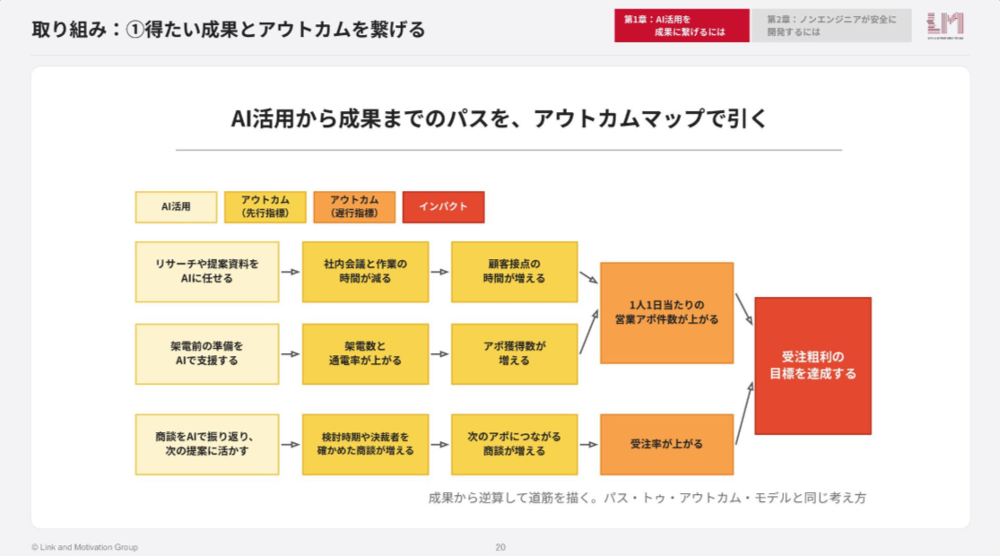
Ảnh 3 – LMI slide 20: outcome map từ dùng AI đến tác động
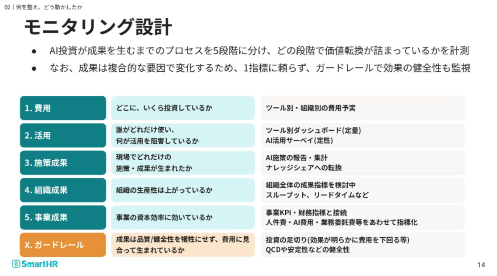
Ảnh 4 – SmartHR slide 14: đo 5 tầng + guardrail về chất lượng/chi phí
Giai đoạn 3 – Guardrail & Golden path
Khi AI đã lan rộng, rủi ro tăng theo: tool chưa được duyệt, người dùng bấm “Approve” theo lời AI cho những thao tác nguy hiểm, “tool hoang” mọc khắp nơi.
LMI không cấm mà dựng hai thứ: guardrail (cấp quyền tool theo cấp độ năng lực) và golden path (quy trình chuẩn để làm tool nội bộ).
Chi tiết ở phần 5.
Giai đoạn 4 – Nhân rộng & vận hành
Mở rộng sang bộ phận khác không phải là “gửi link tool”. LMI dẫn CHAOS Report: ~80% tính năng phần mềm được cung cấp không được dùng. Vì vậy ở bộ phận
mới họ lại cử người thúc đẩy, tổ chức buổi “cài đặt và dùng lần đầu cùng nhau”, và phỏng vấn riêng những người chưa dùng.
SmartHR thì đóng gói việc nhân rộng thành mô hình vận hành: báo cáo tháng lên ban điều hành, sáng kiến được tổng hợp thành báo cáo kết quả và chia sẻ toàn công ty.
4. Cơ cấu tổ chức cần có
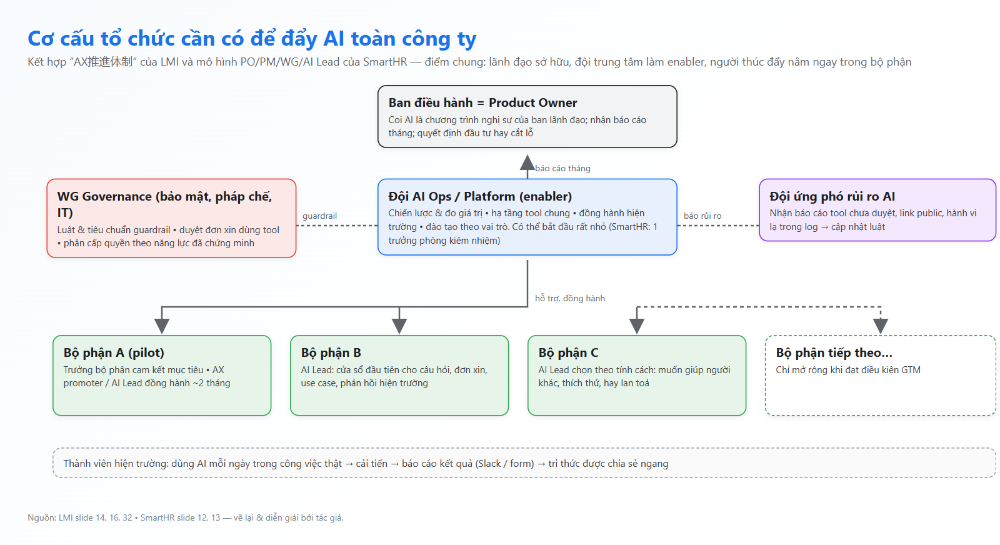
Hình B (tự vẽ) – Cơ cấu tổ chức tổng hợp từ LMI slide 14/16/32 và SmartHR slide 12/13
Hai công ty gọi tên khác nhau, nhưng bộ khung gần như trùng khớp. Tôi tóm lại thành 4 lớp:
Lãnh đạo là owner, không phải nhà tài trợ đứng xa. SmartHR đặt ban điều hành ở vai PO, AI là mục trong chương trình họp ban điều hành.
LMI làm điều tương tự ở cấp bộ phận: trưởng bộ phận phải cam kết mục tiêu trước khi bắt đầu.
Một đội trung tâm nhỏ đóng vai enabler. SmartHR chia vai trò phòng AI Ops thành 3 mảng / 6 chức năng: chiến lược & đo giá trị,
đồng hành hiện trường & đào tạo, nền tảng tool & governance. Ở LMI, vai trò này do bộ phận phát triển đảm nhận (cung cấp nền tảng + đồng hành).
Governance là một nhóm liên phòng ban, không phải một người. SmartHR có WG Governance (bảo mật, pháp chế) bên cạnh WG Promotion (AI Ops, IT).
LMI có đội AI security gồm bộ phận phát triển, IT và pháp chế, nhận báo cáo và cập nhật luật liên tục.
Người thúc đẩy nằm trong từng bộ phận. “AX推進者” ở LMI, “AI Lead” (đang thử) ở SmartHR: là cửa sổ đầu tiên cho câu hỏi, đơn xin, use case,
và là kênh đưa tiếng nói hiện trường ngược lên.
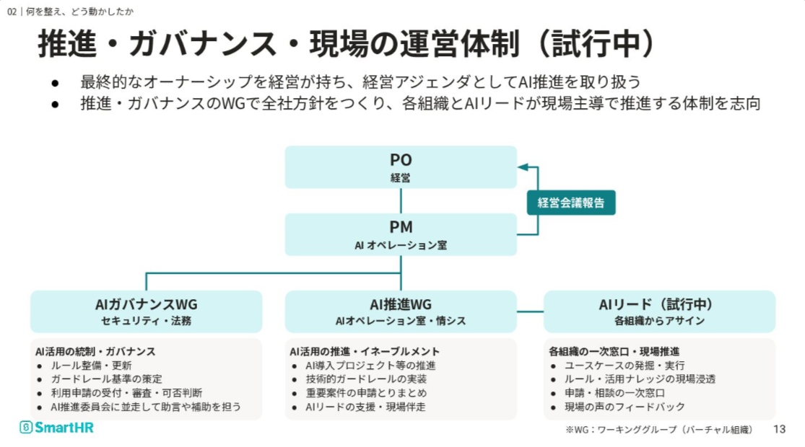
Ảnh 5 – SmartHR slide 13: PO / PM / WG / AI Lead
Chi tiết tôi thấy đắt giá nhất: LMI chọn AX promoter không dựa trên kỹ năng AI, mà dựa trên 3 tính cách: muốn giúp người xung quanh,
không ngại thử–sai, và “lắm chuyện” lan toả điều hay cho cả team. Kỹ năng thì dạy được; còn sự nhiệt tình lan toả thì khó dạy.
Họ cũng có một kỹ thuật thuyết phục trưởng bộ phận rất thực tế: luôn nói “return” (lợi ích bằng con số) đi kèm “request” (người – thời gian – mục tiêu cụ thể),
ví dụ: đặt “dùng AI ít nhất 1 lần/ngày” vào mục tiêu của từng người.
5. Năm nút thắt phổ biến và cách gỡ
LMI nói về “2 bức tường” (định hình thói quen, kết quả), SmartHR nói về “3 bức tường” của khối không phát triển (tạo ra, triển khai, tổ chức hoá).
Đặt chúng lên cùng một con đường từ “phát tool” đến “kết quả kinh doanh”, tôi thấy chúng là 5 chặng nối tiếp, không trùng nhau:
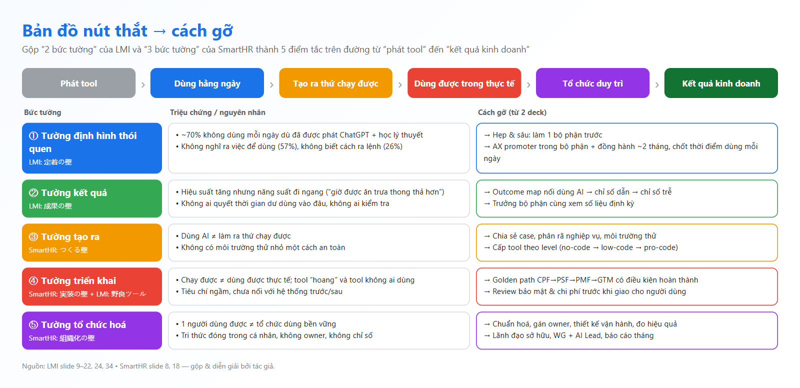
Hình C (tự vẽ) – Bản đồ nút thắt → cách gỡ
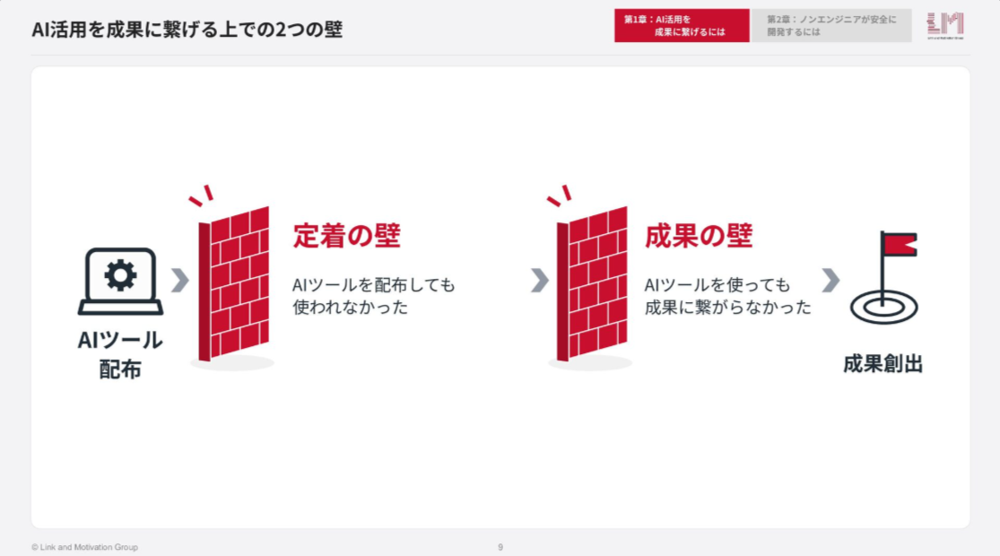
Ảnh 6 – LMI slide 9: hai bức tường
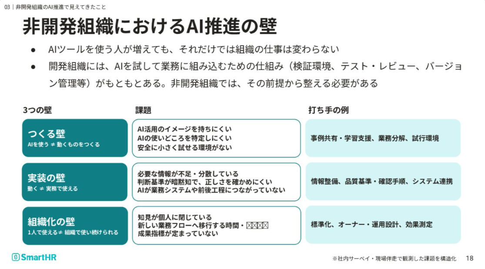
Ảnh 7 – SmartHR slide 18: ba bức tường của khối không phát triển
Guardrail theo cấp độ (LMI)
Thay vì phát cùng một tool cho tất cả, LMI chia 3 cấp: Level 1 no-code (Claude Cowork, Gemini – cho mọi người; chạy trong môi trường
cách ly trên cloud nên lỡ bấm sai cũng không chạm tới máy/mạng nội bộ), Level 2 low-code (Dify / n8n tự host, cho người cải tiến nghiệp vụ chung),
Level 3 pro-code (Claude Code, chỉ cấp cho người đã có tool tạo ra kết quả và trả lời đúng toàn bộ bài test bảo mật).
Slide 27 (ảnh 8) ước lượng tỉ lệ non-engineer ở mỗi cấp khoảng 70% / 20% / 10%; riêng bảng “AI skill map” ở slide 30 lại ghi “tỉ lệ hiện tại” 85% / 10% / 5% – hai slide trong cùng bộ cho số khác nhau, nên coi đây là con số xấp xỉ. Kỹ sư thì tất cả đều được cấp Claude Code.
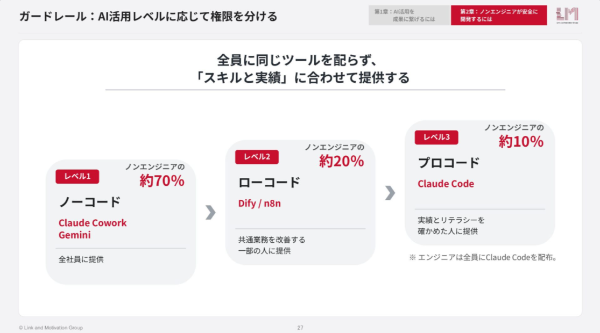
Ảnh 8 – LMI slide 27: cấp tool theo “kỹ năng và thành tích”
Golden path “Fit Journey” (LMI)
Non-engineer giờ đã làm được tool, nhưng chưa ai dạy họ quy trình làm sản phẩm. LMI mượn quy trình phát triển sản phẩm mới
và áp vào tool nội bộ, 4 pha với điều kiện hoàn thành cứng:
Pha
Ý nghĩa
Điều kiện qua pha
CPF
Xác định vấn đề
Vấn đề được người dùng đồng cảm mạnh; To-Be flow + outcome kỳ vọng được trưởng bộ phận đồng ý
PSF/SPF
Kiểm chứng giá trị
2–3 người dùng thử thấy giá trị, đạt mức giảm công dự kiến; qua review bảo mật & chi phí trước khi giao
PMF
Thẩm thấu
Sean Ellis test “rất tiếc nếu mất” ≥ 40%; WAU ≥ 70% user đăng ký; đạt outcome
GTM
Mở rộng sang bộ phận khác
Mỗi bộ phận mới đạt lại đúng 3 điều kiện của PMF
Slide 42 của LMI chốt lại: ai làm tool cũng phải đi đủ 4 điều kiện này, không được bỏ bước.
6. Bài học rút ra theo cách hiểu của tôi
Hãy đối xử với việc triển khai AI như làm một sản phẩm nội bộ. Có khách hàng đầu tiên, có PMF, có metrics, có golden path. Đây là lý do LMI kết luận bằng
Platform Engineering: Team Topologies, guardrail, product management, DORA/SPACE — toàn những thứ dân kỹ sư đã quen.
Nút thắt dịch chuyển theo thời gian. Lúc đầu là “không ai dùng”, sau đó là “dùng mà không ra kết quả”, rồi “làm được tool mà không ai quản”,
cuối cùng là “một người làm được mà tổ chức không duy trì”. Kế hoạch phải đổi trọng tâm theo từng chặng, không có một giải pháp duy nhất.
Thời gian tiết kiệm được là tài sản cần phân bổ, không phải phần thưởng tự nhiên. Nếu không chủ động quyết định nó đi đâu, nó sẽ “bay hơi”.
Guardrail là thứ cho phép chạy nhanh hơn, không phải để chặn. Cấp quyền theo năng lực đã chứng minh giúp vừa an toàn vừa tạo động lực “lên level”.
Bắt đầu nhỏ cũng được. SmartHR bắt đầu với 1 người kiêm nhiệm, chưa có kinh nghiệm AI/DX chuyên trách. Cái quan trọng là được lãnh đạo trao quyền và làm đúng thứ tự: nhìn rõ trước, xây bộ máy sau.
Đo theo chuỗi, chỉ ra chỗ tắc. Mô hình 5 tầng của SmartHR cho biết giá trị bị kẹt ở đâu (đã chi tiền nhưng không ai dùng? dùng nhiều nhưng không có sáng kiến? có sáng kiến nhưng tổ chức không nhanh hơn?).
7. So sánh với Scuti AI (góc nhìn tác giả)
Lưu ý: Phần mô tả “Scuti hiện tại” dưới đây là giả định và quan sát cá nhân của tác giả (một kỹ sư trong công ty), không phải số liệu hay chính sách chính thức của Scuti AI.
Các giả định chính:
Scuti là công ty phần mềm / AI tại Việt Nam, khách hàng chủ yếu là doanh nghiệp Nhật; tổ chức theo dự án (PM, BrSE, comtor, dev, QA).
Kỹ sư đã tự dùng AI (Claude Code, Cursor, Copilot, Gemini trong Google Workspace…) nhưng mức độ khác nhau theo người và theo dự án.
Công ty có chương trình AI Quest để nhân viên nghiên cứu và chia sẻ (bài viết này là một quest).
Hợp đồng/NDA với khách Nhật quyết định AI nào được chạm vào code/dữ liệu của khách; quy định này hiện xử lý theo từng dự án.
Khối không phát triển (HR, kế toán, sales, admin) dùng AI ít hơn khối kỹ thuật; kết quả AI chủ yếu được ghi nhận bằng hoạt động (số quest, số buổi chia sẻ) hơn là bằng chỉ số kinh doanh.
Khía cạnh
LMI
SmartHR
Scuti hiện tại (giả định)
Khoảng cách / hướng thử
Đích đến
Năng suất bộ phận (doanh thu/người, số buổi gặp khách)
“Kết quả kinh doanh bền vững”, không lấy số user làm đích
Khuyến khích học & dùng AI; đích chủ yếu là năng lực cá nhân
Viết đích bằng chỉ số dự án: lead time, lỗi lọt UAT, biên lợi nhuận/man-month
Cách bắt đầu
Hẹp & sâu: 1 bộ phận làm khách hàng đầu tiên
1 tháng Aspire/Assess trước khi làm
Rộng: mọi người cùng làm quest
Giữ AI Quest làm “nền”, thêm 1 pilot sâu ở 1 nhóm
Người thúc đẩy
AX promoter trong bộ phận, chọn theo tính cách
AI Lead mỗi tổ chức (đang thử)
Phụ thuộc người tự nguyện, không có vai trò chính thức
AI Champion mỗi dự án, có thời gian được cấp
Lãnh đạo
Trưởng bộ phận cam kết mục tiêu (return + request)
Ban điều hành là PO, báo cáo tháng
Lãnh đạo ủng hộ, chưa rõ cơ chế báo cáo định kỳ
Báo cáo AI 1 trang mỗi tháng cho ban điều hành
Đo lường
Outcome map + xem số với trưởng bộ phận
5 tầng: chi phí → sử dụng → sáng kiến → tổ chức → kinh doanh
Đo hoạt động (quest, buổi chia sẻ)
Dashboard 5 tầng phiên bản tối giản
Guardrail
3 cấp tool theo năng lực + test bảo mật
WG Governance duyệt đơn, phân loại rủi ro
Quy định theo từng dự án/khách
Ma trận “cấp tool × mức nhạy cảm dữ liệu khách”
Tool nội bộ
Golden path CPF→PMF→GTM, ~3.000 tool
Thu thập báo cáo sáng kiến hằng tháng qua Slack
Script/tool cá nhân nằm rải rác, ít được tái dùng
Áp Fit Journey rút gọn cho output của AI Quest
Rủi ro
Đội AI security liên phòng ban
WG Governance (bảo mật, pháp chế)
Xử lý khi phát sinh
Kênh báo rủi ro AI + checklist trước khi dùng AI với dữ liệu khách
Điểm khác biệt quan trọng của một công ty outsourcing: LMI và SmartHR là công ty sản phẩm/dịch vụ của chính mình, nên “thời gian tiết kiệm” chuyển thẳng thành năng suất.
Với hợp đồng tính theo man-month, tiết kiệm thời gian có thể làm giảm doanh thu nếu không đổi cách định giá. Vì vậy bài học “phải quyết định thời gian dư đi đâu” của LMI
với Scuti còn quan trọng hơn: dùng nó để nhận thêm scope trong cùng đội, tăng chất lượng (ít lỗi hơn, ít vòng Q&A hơn), hoặc chuyển dần sang hợp đồng trọn gói / lab có KPI.
Đây là quan điểm cá nhân, cần thảo luận với bộ phận kinh doanh.
8. Chiến lược sẽ thử tại Scuti & cách áp dụng
Tôi chọn 6 chiến lược có thể bắt đầu ngay, sắp theo đúng thứ tự của lộ trình ở phần 3:
S1. Một trang “đích đến + hiện trạng” (Giai đoạn 0, 2 tuần)
Kiểm kê: tool AI nào đang được trả tiền, ai dùng, dự án nào được phép dùng gì theo hợp đồng.
Viết đích bằng 2–3 chỉ số dự án thay vì số user. Ví dụ: “giảm 30% thời gian từ khi nhận spec tiếng Nhật đến khi chốt Q&A”.
Dùng thế nào: làm khảo sát ngắn kiểu LMI (“vì sao bạn chưa dùng AI mỗi ngày?”) để biết nút thắt thật trước khi chọn giải pháp.
S2. Pilot 66 ngày ở một nhóm (Giai đoạn 1)
Ứng viên “khách hàng đầu tiên”: nhóm BrSE/comtor (dịch spec, viết Q&A, biên bản họp) hoặc nhóm QA (sinh test case, review).
Nói chuyện với leader bằng công thức return + request: “giảm X giờ/tuần cho nhóm” + “cần 1 champion 10% thời gian, leader dự review tuần, mục tiêu cá nhân có ‘dùng AI mỗi ngày’”.
Dùng thế nào: chọn champion theo 3 tính cách của LMI, chốt 2–3 “khoảnh khắc dùng AI cố định” mỗi ngày, review 15 phút mỗi tuần.
S3. Outcome map cho dự án outsourcing (Giai đoạn 2)
Ví dụ: AI hỗ trợ dịch & tóm tắt spec → (chỉ số dẫn) số câu Q&A gửi khách giảm, thời gian đọc spec giảm → (chỉ số trễ) lead time ticket giảm, lỗi do hiểu sai spec giảm → (tác động) biên lợi nhuận dự án, mức hài lòng khách.
Dùng thế nào: lấy số tự động từ Backlog/Jira và lịch họp (giống LMI lấy từ Calendar), xem cùng PM mỗi 2 tuần; nếu chỉ số dẫn không đổi thì điều chỉnh cách dùng, không đổ lỗi cho người dùng.
S4. Ma trận guardrail “cấp tool × dữ liệu khách” (Giai đoạn 3)
Level 1 (mọi người): Gemini / chat AI trong Workspace công ty — chỉ dữ liệu nội bộ hoặc đã ẩn danh.
Level 2 (người cải tiến quy trình): low-code như Workspace Studio / n8n / Dify trên môi trường công ty quản lý, có log.
Level 3 (coding agent trên repo khách): chỉ khi hợp đồng cho phép + người dùng qua bài test bảo mật (học cách LMI: phải đúng toàn bộ).
Dùng thế nào: mỗi dự án có 1 dòng trong ma trận, được PM + bộ phận bảo mật duyệt khi kick-off. Thêm một kênh chat “báo rủi ro AI” không quy lỗi.
S5. Golden path rút gọn cho output của AI Quest (Giai đoạn 3–4)
Quest có tool/skill/prompt hay sẽ đi qua 4 cổng: vấn đề có người thật cần (CPF) → 2–3 người dùng thử thấy giá trị + review bảo mật/chi phí (PSF) → WAU, Sean Ellis test trong nhóm (PMF) → nhân sang dự án khác (GTM).
Dùng thế nào: biến AI Quest từ “nộp bài” thành “ống dẫn” sinh tài sản dùng chung; chỉ quest qua được PMF mới được đưa vào thư viện chung.
S6. Mô hình vận hành nhỏ + báo cáo tháng (Giai đoạn 4)
1 sponsor ở ban điều hành; 2–3 người kiêm nhiệm làm “AI Ops” (enabler); WG Governance (bảo mật/ISMS, pháp chế, IT); AI Champion mỗi dự án.
Báo cáo tháng 1 trang theo 5 tầng của SmartHR: chi phí tool → tỉ lệ dùng → sáng kiến/quest có kết quả → chỉ số dự án → tác động kinh doanh.
Dùng thế nào: sáng kiến hằng tháng gửi qua 1 form/kênh Slack (giống SmartHR), AI Ops tổng hợp thành báo cáo chia sẻ toàn công ty.
Lộ trình 6 tháng gợi ý cho Scuti (đề xuất cá nhân):
Tháng 1: S1 • Tháng 1–3: S2 (pilot 66 ngày) • Tháng 2–4: S3 • Tháng 3–5: S4 + S5 • Tháng 5–6: S6 và mở rộng sang nhóm thứ hai.
Điều kiện để mở rộng: nhóm pilot dùng AI hằng ngày và có ít nhất 1 chỉ số dẫn chuyển động rõ.
9. Video quá trình nghiên cứu
Video quay lại quá trình đọc và tổng hợp: mở hai deck trên Speaker Deck, lật từng slide và dừng ở các slide quan trọng,
xem lại các sơ đồ tự vẽ, rồi kết thúc bằng việc cuộn bài blog này từ đầu đến cuối.
Hai deck nói cùng một điều theo hai hướng: LMI chứng minh rằng ở hiện trường, thói quen, kết quả và an toàn phải được thiết kế chứ không tự đến;
SmartHR chứng minh rằng ở cấp công ty, cần một bộ máy — lãnh đạo sở hữu, đội enabler nhỏ, governance liên phòng ban, người thúc đẩy trong từng bộ phận và một hệ đo theo chuỗi.
Với Scuti, lợi thế lớn nhất là chúng ta vốn là công ty kỹ sư: những thứ như golden path, guardrail, metrics, PMF là “ngôn ngữ mẹ đẻ”.
Việc còn lại là mang chúng sang các nhóm bên cạnh — và như slide cuối của LMI: “trước hết, hãy đến nghe một bộ phận nói chuyện.”
3 việc tôi sẽ làm tuần tới:
Gửi khảo sát 3 câu “vì sao chưa dùng AI mỗi ngày” cho 1 nhóm BrSE/QA.
Phác outcome map cho 1 dự án đang chạy và hỏi PM xem số nào lấy được tự động.
Đề xuất bảng ma trận guardrail (S4) để bộ phận bảo mật góp ý.
Tài liệu được trích trong slide (chưa đọc trực tiếp): McKinsey “A better way to lead large-scale change” (5As); Lally et al. (2010) về hình thành thói quen; Standish Group CHAOS Report; bài “AI利用率99.8%。SmartHRの「現在地」と「次の壁」”.